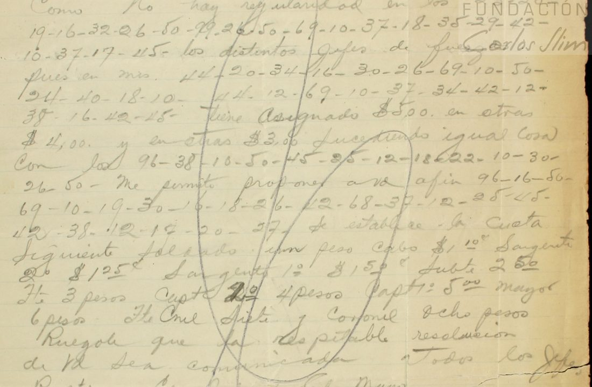

At a glanceKey from adjacent plaintext · partial (85% of the cipher)
- The note
- A pencil note on one sheet, dated “Monterrey, 13 Jun.” (the catalogue gives 13 June 1914; the sheet has no year), addressed “Gral. don Pablo González” and signed “El Jefe de E. Mayor, Cnel. A. Fuentes D.” The catalogue names the writer as Alberto Fuentes Dávila. Clear Spanish with four runs of two-figure groups; a large pencil loop is drawn across the text.
- Where
- CEHM-Carso, Mexico City, Fondo LXVIII-1 (papers of Gen. Pablo González), LXVIII-1.17.2435.1, one scan. Part of catalogue entry 1465; its other items are deciphered on their own pages or not yet deciphered.
- The cipher
- Clave Extra 3: two-figure groups from 10 to 99 in a table in which each letter has two groups (for example 20 and 10 are both a, 26 and 16 both e), and word groups such as 96 de and 99 que. The table is the one the Murguía target (
targets/murguia1914) rebuilt from a contemporary pencil decipherment of another sheet of the fonds. - How it was read
- That key, frozen before this sheet was decrypted (by the contributor’s record), was applied unchanged: every group of the sheet has a value and the result is Spanish. Nothing on this sheet was used to build the key.
- What it says
- The chiefs of forces draw pay at different rates (the first captain $5.00 in some pay sheets, $4.00 or $3.00 in others); to make it uniform Fuentes proposes a scale from private, one peso, to colonel, eight pesos.
- Still open
- Two coded words rest on a one-figure repair chosen by the sense and count as not read (84.6%, under the 95% bar); one more figure is doubtful. Date year and writer’s full name are the catalogue’s.
- Credit
- Transcription, application of the key and reading by WAINUT with AI language-model agents from the CEHM images; no human palaeographer checked the text. The project re-ran the scripts, wrote its own decoder and compared the scan.
01 The note
One pencil sheet from the papers of General Pablo González, whom a letter of Murguía in the same papers (LXVIII-1.14.1943.1) addresses as general in chief of the División del Noreste. It is written by his chief of staff, “Cnel. A. Fuentes D.”, in Monterrey on 13 June; the year 1914 is the catalogue’s. Four runs of two-figure groups stand in the clear lines, so the cipher is short (81 groups) and each run is framed by clear words. A large pencil loop and a vertical line cross the writing, and a word in the top right corner (“Earle”?) is not read.

02 The key
Clave Extra 3 is named on another sheet of the same fonds, LXVIII-1.14.1943.1 (a letter of Francisco Murguía to González of March 1914), whose typed copy carries a contemporary pencil decipherment. The table was rebuilt from that decipherment in the Murguía target and tested there on a held-out page (0.842 letter agreement; shuffled keys at most 0.154); that test belongs to the Murguía target and was not repeated here. The file used here, key_frozen.tsv, is that key with 60 values, copied unchanged; the integration check found it identical line for line with the Murguía copy (key_frozen.tsv of that page, comment lines apart). One key, one entry: the key belongs to the Murguía target, and this sheet and the Carranza sheet are two more documents read with it. The method label “key recovered based on adjacent plaintext” is the contributor’s and is kept: the key was built from a decipherment of another item, not from this sheet. Groups 10 to 69 are letters (51 is the ending -mente), in a layout where the tens figure picks one of two homophones, and 78 to 99 are words (82 enemigo, 87 para, 96 de, 99 que).
That the key is applied and not fitted is the point of the page: it was frozen on another sheet and never adjusted to this one. All 29 distinct groups of the note have a value, and the decryption is a pay scale, with words such as haberes, papeletas, oficiales and uniformidad that no fitting could have put there. The contributor’s statistical check (a score per letter of −2.175 against −5.57 on average for 200 random keys, best −3.95; z 6.0) passes, though 81 groups are few. The order in which the key was frozen and this sheet decrypted rests on the contributor’s record (a single commit, no external timestamp). The other Mexican telegram and letter targets use other systems; the numeric key of the Reyes target agrees with this one in 1 group of 27 in common.
03 The reading
Monterrey, 13 Jun. [1914]. Gral. don Pablo González. Como no hay regularidad en los HABERES QUE ESTÁN COBRANDO los distintos jefes de fuerzas, en m[i]s PAPELETAS {G/E}L CAPITÁN PRIMERO tiene asignado $5.00, en otras $4.00 y en otras $3.00, sucediendo igual cosa con los DEMÁS OFICIALES. Me permito proponer a Ud., a fin DE ESTABLECE{I/R} UNIFORMIDAD, se establezca la cuota siguiente: soldado un peso, cabo $1.10, sargento 2o $1.25 … Coronel ocho pesos.
In English: “As there is no uniformity in the pay that the various chiefs of forces are drawing, in my pay sheets the first captain is assigned $5.00, in others $4.00 and in others $3.00, and the same happens with the other officers. I take the liberty of proposing to you, in order to establish uniformity, that the following rate be set: private one peso, corporal $1.10 … colonel eight pesos.” Capitals are the coded words; braces mark the two repairs. The full reading and translation are below.
Counted by the README rule, strictly, the four runs hold 13 coded words: 11 verbatim from the signs and 2 with a changed value ({g/e}l, where the sheet shows 24 and the sense needs 26; establece{i/r}, where the first figure is hidden under the pencil loop and the sheet shows 12 where the sense needs 42). A word whose value the sense chose is not read, so 11 of 13, 84.6%, partial. The contributor counted the same way; an AI reader who did not make the work graded the three sentences A and proposed “read”, and the contributor kept “partial” at this share. The clear words “en m[i]s” and the list of pay were read from the pencil once, without a second pass, and are not part of the cipher count.
04 What remains uncertain
- The first figure of the group in “establece{i/r}” (run F04, group 11) is hidden where the pencil loop crosses the line; it is kept as 12, the figure as it shows, and the sense needs 42 (illegible).
- The group in “{g/e}l capitán primero” (run F02, group 10) shows 24 where the sense needs 26. It occurs once, so a slip of the writer and a misreading cannot be told apart (too short).
- The second figure of the second group of the first run (“haberes”) is open at the top and could be 0 or 9; 20 (a) is kept because the word needs it, and the word stays counted as verbatim. The integration reader saw both 20 and 29 as possible (illegible).
- The year 1914 and the writer’s full name, Alberto Fuentes Dávila, are the catalogue’s; the sheet gives neither. The corner word is not read.
- The key’s own held-out test, and the pencil decipherment it comes from, belong to the Murguía target and were not checked on that sheet here. No edition or decipherment of this note was found by the contributor’s web searches (repeated once by a reviewer); the 2019 and 2025 articles by Narváez on Constitutionalist cryptography and M. W. González, Con Carranza, were not read, so a printed reading cannot be ruled out.
Full texts
The transcription and the decryption of every document on this page, so that the reading can be used and checked. Short files are shown here; all are in the repository.
Fuentes to González, Monterrey, 13 Jun [1914] read in part
The chief of staff writes that the chiefs of forces draw pay at different rates (in some pay sheets the first captain is given $5.00, in others $4.00 or $3.00, and the same for the other officers) and proposes a uniform scale from private (one peso) to colonel (eight pesos), asking that González's decision be sent to all chiefs.
Builds coherent sentences, but under the read bar of 95% of words read as sense (85% here); the holes are marked in the reading.
Transcription
transcription_LXVIII-1.17.2435.1.txt
# CEHM LXVIII-1.17.2435.1, A. Fuentes D[ávila], Jefe del Estado Mayor, to Gral. Pablo González, Monterrey, 13 Jun [1914]. Pencil. # Reconciled transcription (pass 1 + pass 2, settled on the enlarged crops). # F01 g1: first figure 2 on the enlarged crop (pass 1 had 3); g2: second figure open at top, read 0 (9 not excluded). # F03 g3: 10 on the enlarged crop (pass 1 had 16 or 10). # F04 g11: the first figure is hidden where the large pencil loop crosses the line; the visible # stroke allows 1 or 4. Kept as 12 (the figure as it shows); see the reading for the repair. F01 Como no hay regularidad en los | 23-20-19-16-32-26-50-99-26-50-69-10-37-18-35-29-42-10-37-17-45 | los distintos jefes de fuerzas en ms. F02 jefes de fuerzas en ms. | 44-20-34-16-30-26-69-10-50-24-40-18-10-44-12-69-10-37-34-42-12-38-16-42-45 | tiene asignado $5.00 F03 igual cosa con los | 96-38-10-50-45-25-12-18-22-10-30-26-50 | Me permito proponer a Ud. a fin F04 a fin | 96-16-50-69-10-19-30-16-18-26-12-68-37-12-25-45-42-38-12-17-20-27 | se establece la cuota siguiente
Decryption
decryption_LXVIII-1.17.2435.1.txt
# Mechanical decryption with key_frozen.tsv (scripts/decrypt.py); capitals = word codes; [NN] = unread or unidentified group F01 haberesQUEestancobrando # 21 groups, 0 unread/unidentified F02 papeletasglcapitanprimero # 25 groups, 0 unread/unidentified F03 demasoficiales # 13 groups, 0 unread/unidentified F04 deestableceiuniformidad # 22 groups, 0 unread/unidentified
Reading
# Reading of A. Fuentes D.'s note to Pablo González, Monterrey, 13 June [1914] (CEHM LXVIII-1.17.2435.1)
Pencil note. Clear text as written (abbreviations kept). Coded text in capitals, decrypted with `key_frozen.tsv` (Clave Extra 3, built from LXVIII-1.14.1943.1). Marks: `{x/y}` the key gives x, the reading takes y.
> Monterrey, 13 Jun. [1914]. Gral. don Pablo González. Como no hay regularidad en los HABERES QUE ESTÁN COBRANDO los distintos jefes de fuerzas, en m[i]s PAPELETAS {G/E}L CAPITÁN PRIMERO tiene asignado $5.00, en otras $4.00 y en otras $3.00, sucediendo igual cosa con los DEMÁS OFICIALES.
>
> Me permito proponer a Ud., a fin DE ESTABLECE{I/R} UNIFORMIDAD, se establezca la cuota siguiente: soldado un peso, cabo $1.10, sargento 2o $1.25, sargento 1o $1.50, subte. 2.50, Tte. 3 pesos, Capt. 2o 4 pesos, Capt. 1o 5.00, mayor 6 pesos, Tte. Cnel. siete y Coronel ocho pesos.
>
> Ruégole que la respetable resolución de Ud. sea comunicada a todos los jefes. Respte. El Jefe de E. Mayor, Cnel. A. Fuentes D.
The clear words "en m[i]s" and the pay list are read from the pencil once, without a second pass; they are not part of the cipher count. A word in the top right corner of the sheet ("Earle"?) is not read.
## Coded runs (checked by scripts/check_marks.py)
F01 | haberes que están cobrando
F02 | papeletas {g/e}l capitán primero
F03 | demás oficiales
F04 | de establece{i/r} uniformidadTranslation
translation_LXVIII-1.17.2435.1.md
# Translation: A. Fuentes D. to Pablo González, Monterrey, 13 June [1914] (CEHM LXVIII-1.17.2435.1) Coded parts in capitals. > Monterrey, 13 June [1914]. General don Pablo González. As there is no uniformity in THE PAY THAT the various chiefs of forces ARE DRAWING, in my PAY SHEETS THE FIRST CAPTAIN is assigned $5.00, in others $4.00 and in others $3.00, and the same happens with THE OTHER OFFICERS. > > I take the liberty of proposing to you, in order TO ESTABLISH UNIFORMITY, that the following rate be set: private one peso, corporal $1.10, 2nd sergeant $1.25, 1st sergeant $1.50, sub-lieutenant 2.50, lieutenant 3 pesos, 2nd captain 4 pesos, 1st captain 5.00, major 6 pesos, lieutenant colonel seven and colonel eight pesos. > > I beg that your respected decision be communicated to all the chiefs. Respectfully, the Chief of Staff, Colonel A. Fuentes D.
Key: key_frozen.tsv
05 Sources
- CEHM-Carso (Centro de Estudios de Historia de México, Fundación Carlos Slim), Fondo LXVIII-1: LXVIII-1.17.2435.1, image 0001 (direct JPG from the CEHM viewer, fetched 12 and 13 November 2026; the viewer refused nothing). Viewer: LXVIII-1.17.2435.1.
- The key: the contemporary pencil decipherment on LXVIII-1.14.1943.1, pp. 3–4, rebuilt in the Murguía write-up (
targets/murguia1914). - Transcription, key application, readings and scripts by WAINUT (pull request #514), in
targets/fuentes1914.
The key, the transcription, the readings and the checks are in targets/fuentes1914.
Cite this page
WAINUT and Daniel Bourdeau, “A. Fuentes D. to Pablo González, Monterrey, 13 June [1914]”, Cyphersolver, posted 13 November 2026, https://cyphersolver.com/fuentes1914.html.